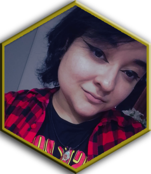

Como tomar?
Este projeto tem por finalidade democratizar a forma como os idosos têm acesso às informações dos medicamentos que tomam, criado para o projeto de extensão curricular na Universidade Santa Cecília - Santos/São Paulo.
Saiba mais Meu primeiro contato com computadores aconteceu ainda na infância, mas foi no antigo Tumblr que encontrei minha fagulha para a descoberta de novas habilidades. Brincando com HTML para personalizar minha página neste site, descobri que podia transformar uma simples página em algo único, com cor, personalidade e propósito.
Desde então, mergulhei nos estudos de desenvolvimento Front-End, com foco em criar experiências digitais que sejam vivas, acolhedoras e diferentes do padrão minimalista que domina tantos sites atualmente. Gosto de design com emoção: interfaces que nos tragam nostalgias, sentimentos, e o mais importante: contem histórias.
Já ministrei aulas para crianças e trago dessa experiência uma visão lúdica e sensível, que se reflete nos projetos que desenvolvo. Minha intenção é unir técnica com criatividade, estrutura com sensibilidade, afinal a web também pode ser um lugar divertido e colorido.
Este projeto tem por finalidade democratizar a forma como os idosos têm acesso às informações dos medicamentos que tomam, criado para o projeto de extensão curricular na Universidade Santa Cecília - Santos/São Paulo.
Saiba maisO Conecta Sênior é um site criado para o meu segundo projeto de Extensão Curricular da Universidade Santa Cecília - Santos/São Paulo. Seu objetivo é auxiliar o cuidador de idosos, para que ele consiga fazer uma rotina organizada para o idoso.
Saiba maisGostaria de ver mais projetos? Acesse meu Github 🍯
Escolha seu favo de preferência para falar comigo, adorarei conversar com você!